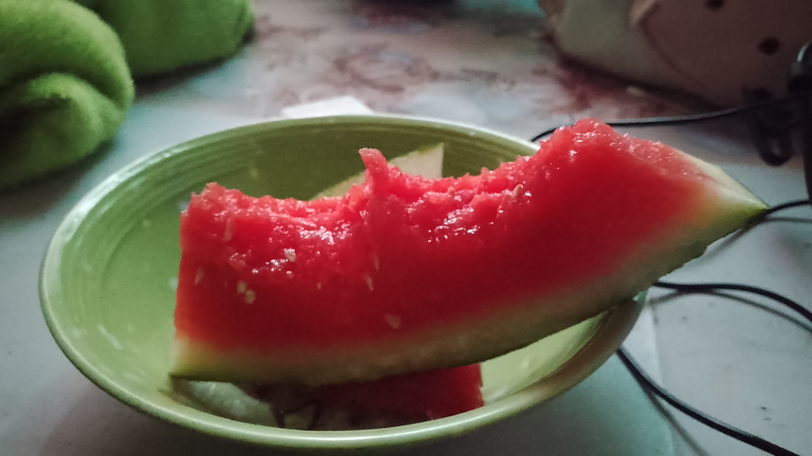
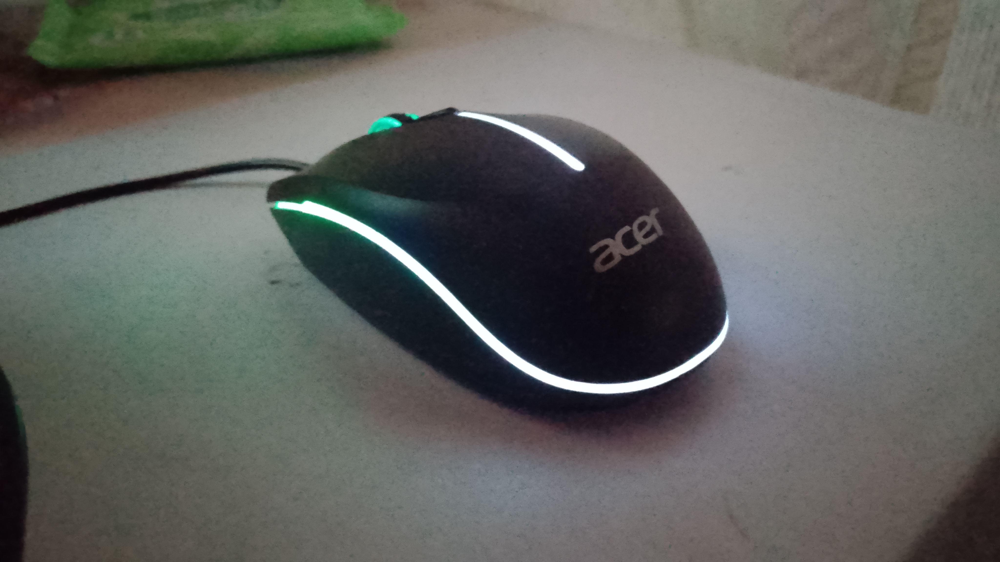
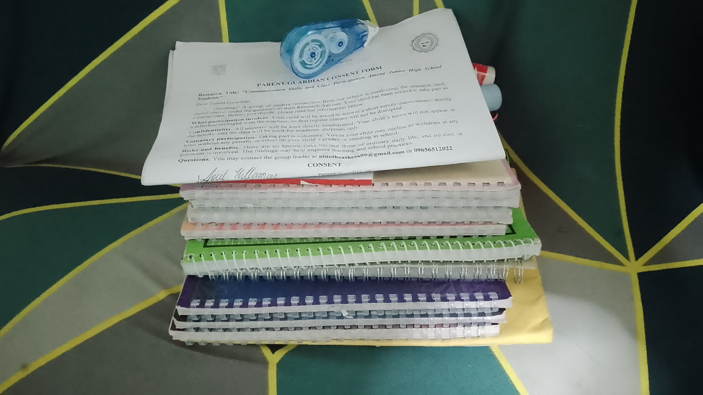

Water Melon, Very Yummy!
By: Klein Dindin
Enjoy a refreshing slice of watermelon with a crisp bite and naturally sweet flavor. Serve it chilled as a simple snack, cut it into wedges to share, or add juicy cubes to a fruit bowl, salad, or picnic spread. Its bright, refreshing taste makes it a lovely choice for warm afternoons, family get-togethers, and everyday treats. Enjoy it on its own or pair it with your favorite fresh fruits for an easy, colorful snack. Please contact the seller to ask about the melon's size, ripeness, availability, and pickup details.
₱50

Acer Mouse - Very silent
By: Klein Dindin
Looking for a quieter way to work, study, or browse? This Acer mouse is described as very quiet, making it a practical choice for everyday computer tasks at home, school, or work. Use it to navigate documents, browse the web, and keep your daily tasks moving without adding unnecessary noise to your workspace. Please message the seller to confirm the exact model, connection type, compatibility with your device, current condition, and what is included.
₱50

Affordable secondhand note books for sale!
By: Klein Dindin
Stock up on affordable secondhand notebooks for classes, work notes, journaling, to-do lists, or everyday ideas. They offer a simple, budget-friendly way to keep thoughts organized without needing a brand-new notebook for every task. Keep one by your desk, pack one for class, or use one to collect plans and reminders in one place. Since these notebooks are pre-owned, please ask the seller which ones are available and confirm their size, remaining pages, condition, and price before arranging pickup.
₱50